相機釘在前牆、朝後看 —— 玻璃後牆 + 觀眾位於畫面遠端中央，近相機處（畫面底部）是前牆。 球在真實 3D box 裡飛，投影成第三人稱房間透視。下圖標出全部結構：出界線、發球線、tin、玻璃後牆、左右發球框、HUD。
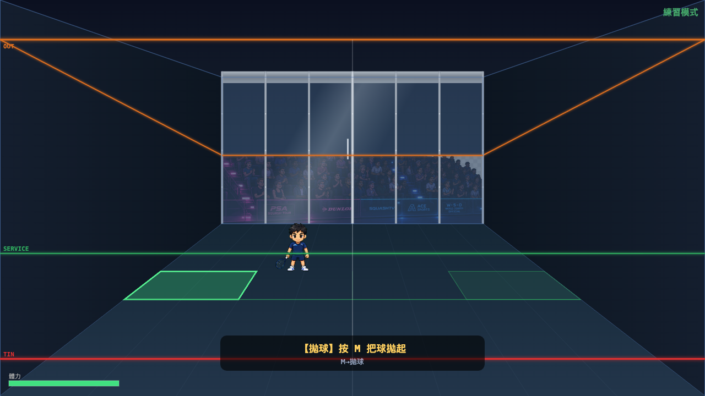
球場結構總覽
畫面頂：橘色 OUT 線沿天花板收斂；中央遠端：玻璃後牆透出觀眾與贊助看板； 玻璃上橫線：前牆出界線；綠線：SERVICE 發球線；底部紅線：TIN； 地板左右兩個梯形是發球框（當前發球框高亮）；左上/右上為雙方比分與體力 HUD。
五種揮拍各有獨立的飛行剖面（出牆高度、飛行時間、瞄準點都不同）。每張皆走真實練習發球流程（拋球 → 揮拍 → launchPracticeRally）打出， 黃色持久殘影就是該球的真實軌跡；亮球頭帶尾勁，正從前牆剝離 —— 那一刻最能讀出是哪一種球。 J 殺球K 放小球L 抽球U 反角Space 高吊
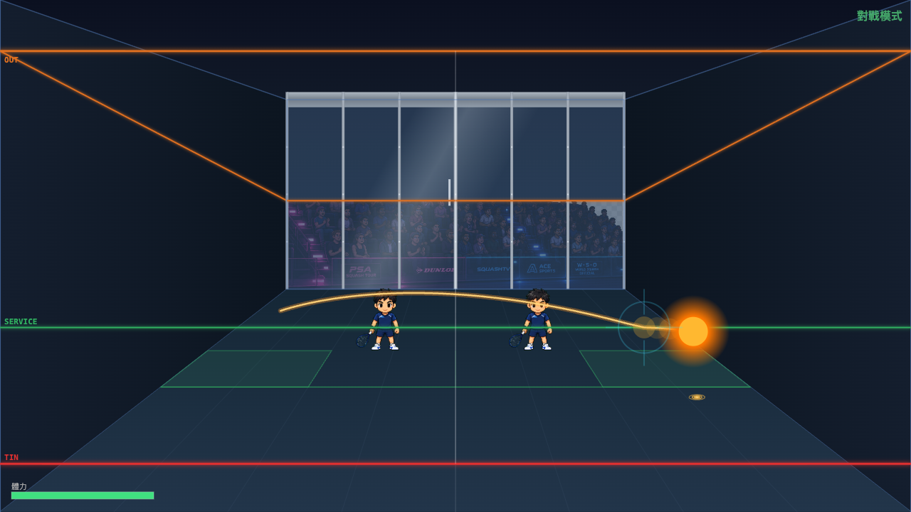
Kill 殺球 最平最低
出牆高度約 42% 牆高、飛行時間最短 —— 軌跡最平貼，下壓快、瞄準接球者腳邊。需要高球才合法，低球會自動降級成抽球。
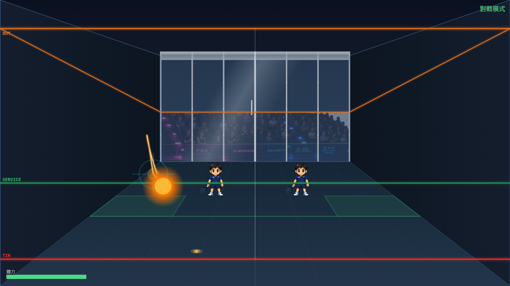
Drop 放小球 最短
貼近前牆輕觸前角，落點最短、弧線收得最快 —— 把對手吊到網前。
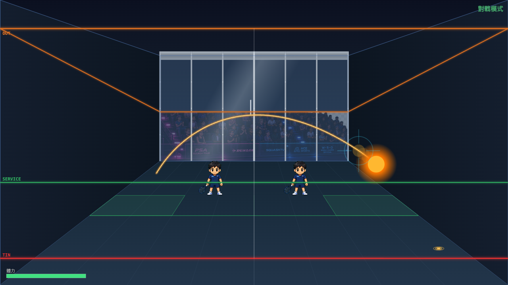
Drive 抽球 主力球
標準直線安全球，中等出牆高度、瞄準接球者 —— 沿邊線回後場的穩定主力路線。
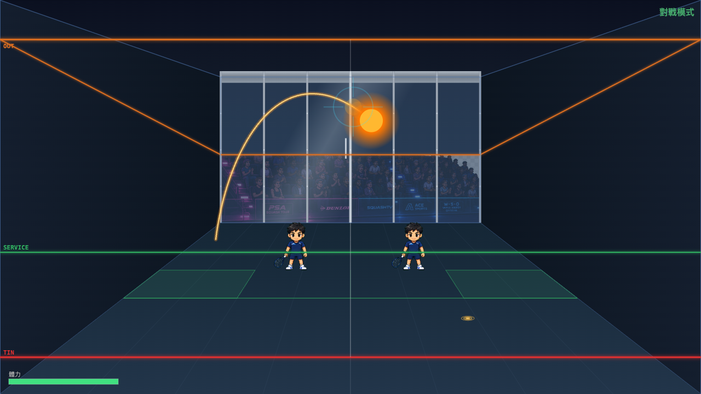
Lob 高吊 最高
出牆高度約 85% 牆高、飛行時間最長 —— 高飄越過出界線下方、落到後角，重整節奏。
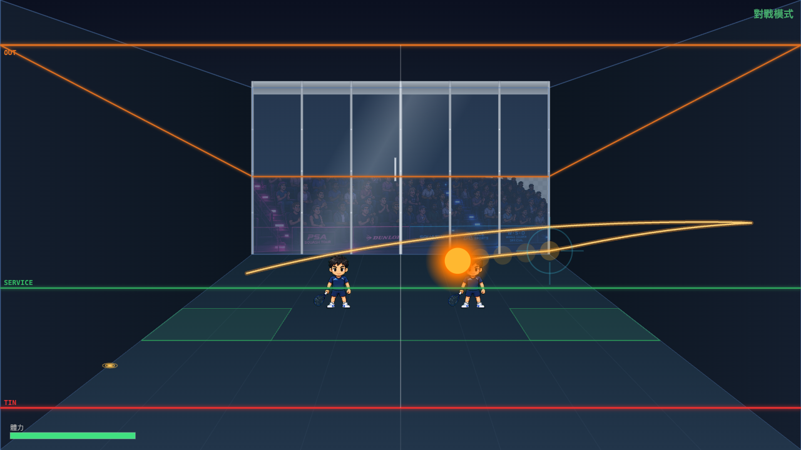
Boast 反角 先側牆後前牆
軌跡先深入右側牆（畫面右緣那段殘影），再斜切到前牆 —— 牆序為「側→前」，這正是 boast 的招牌簽名。
亮球頭正從前牆剝離、帶尾勁。記錄到的牆序 ["27:right","38:front"]。
「三顆星」＝球在第一次落地前依序碰到左牆 + 右牆 + 前牆三面牆。兩種取景都收：乾淨單弧版讀得清楚，多牆豐富版展示物理的複雜度。
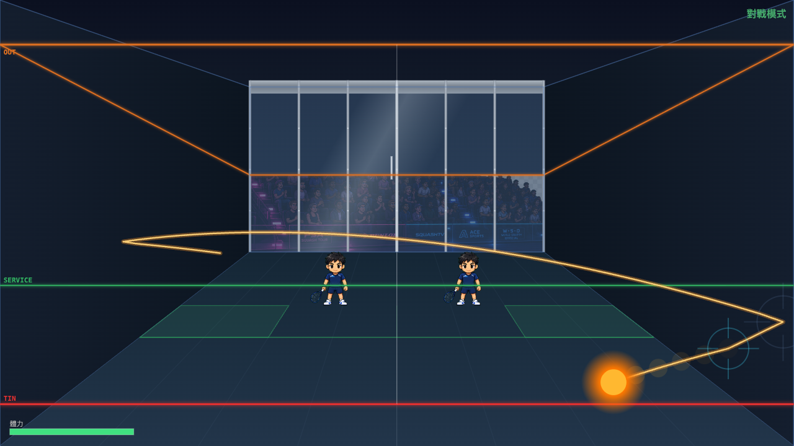
乾淨三星 單一可讀弧
側 → 側 → 前，三角各自分明、第一次落地前完成 —— 一條乾淨的三角弧，最容易看懂三面牆的順序。
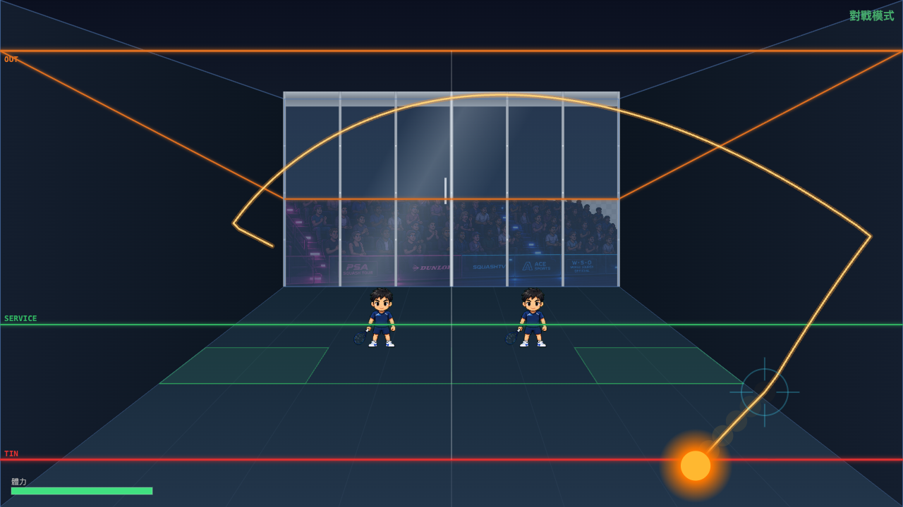
豐富三星 多牆展示
最寬的多牆鋪展，殘影織成密網 —— 展示球在四牆 3D box 內連續反彈的物理張力。
玻璃是後牆（觀眾在它後面）。打到玻璃會反彈但不結束 rally —— 所以「打到玻璃後還能繼續擊球」。 球一路帶尾勁，剛打到玻璃那一刻才看得出來。對比兩種死球：打太高出界、打太低觸 tin。
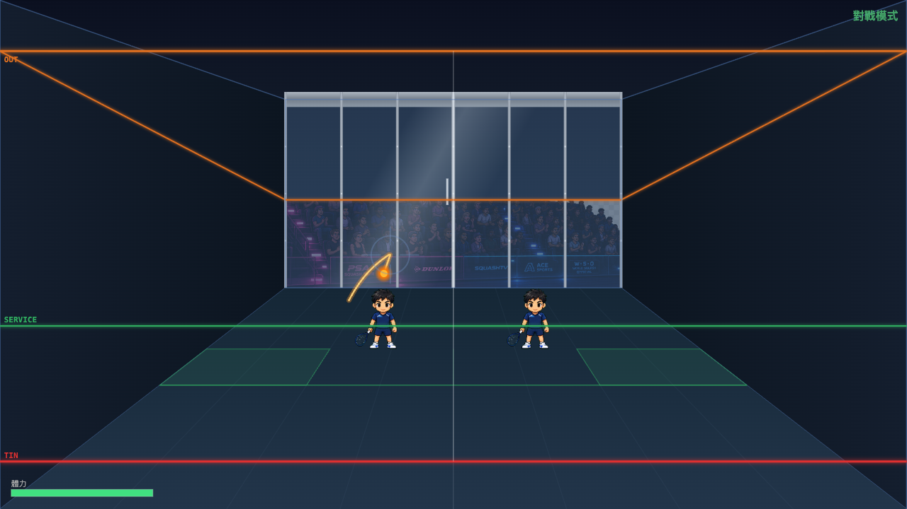
打到玻璃 → 繼續擊球 不死球
球驅深至後玻璃牆（畫面遠端中央、觀眾正前），以 WALL_BOUNCE 反彈、lastWall="back"，
rally 不中斷。亮球頭緊貼玻璃、尾勁指回它剛撞上的玻璃 —— 玩家可追身續打。
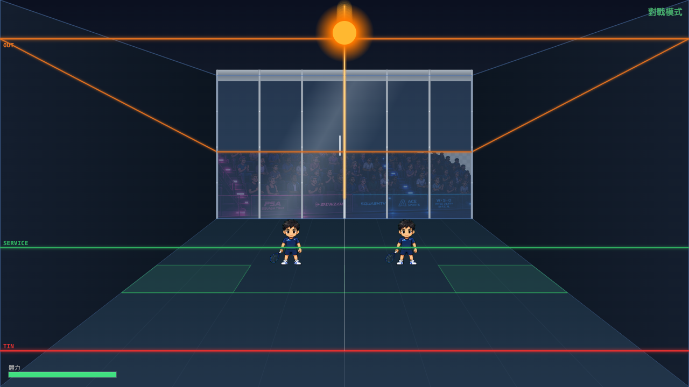
打太高 → 出界 OUT fault
球在前牆平面上方越過 OUT 線 —— 沒打到玻璃、直接出界，deadReason="out"。
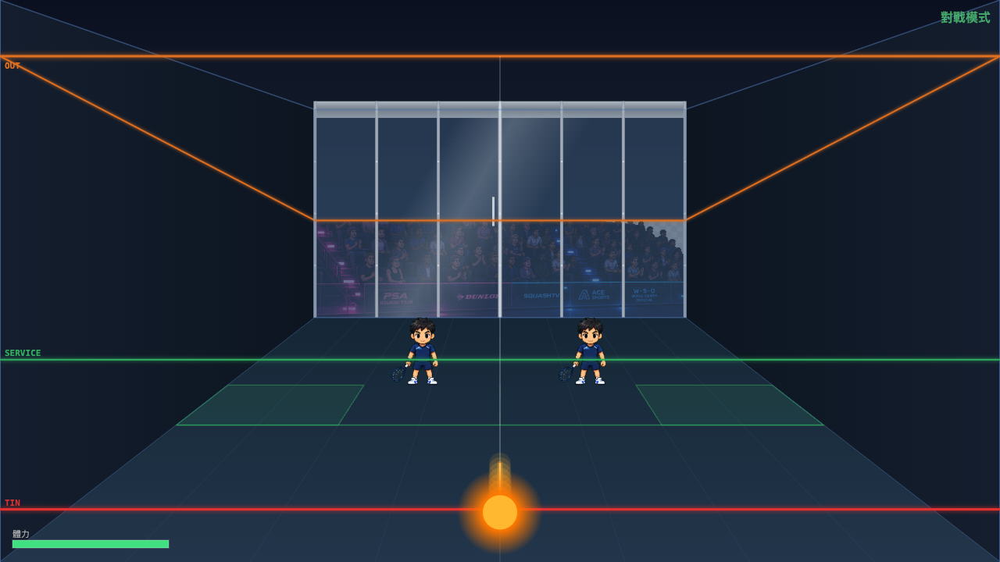
打太低 → 觸 tin TIN fault
球擊中前牆 tin 以下（紅線之下）—— 死球，deadReason="tin"。
練習模式發球分三步：走進發球框 → 按 M 拋球 → 揮拍鍵打出。 這是策略遊戲不是反應遊戲 —— 拋起的球以慢動作飄浮，給玩家時間讀位、選球路再揮拍。
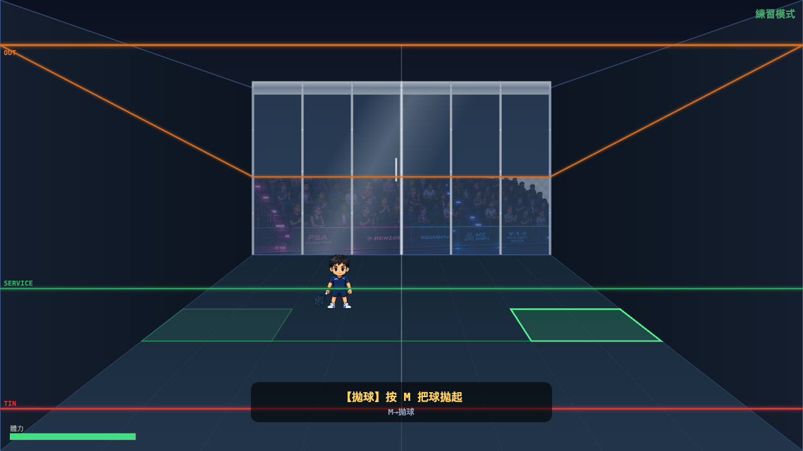
① 準備拋球 toss prompt
站進發球框（高亮框），底部提示「【拋球】按 M 把球拋起」。發球框由站位自動鎖定。
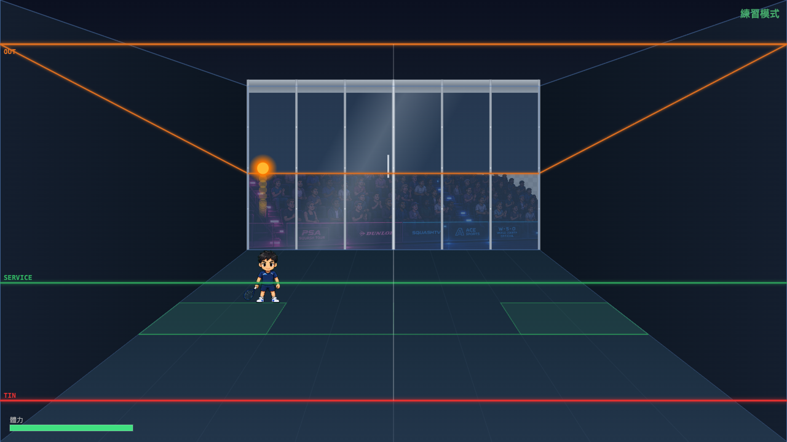
② 拋球騰空 slow-mo airborne
按 M 後球以慢動作上升（發光亮球 + 上升尾跡），停在球員上方 —— 這段時間玩家讀位、選擇 J/K/L/U/Space。
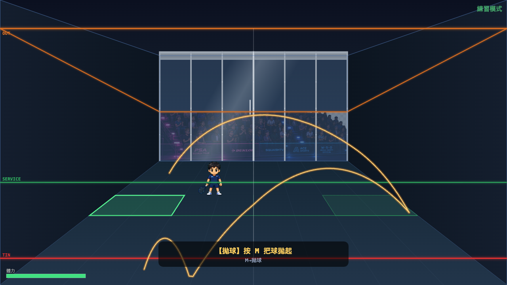
③ 揮拍打出 → 真實發球軌跡 launch + path
揮拍鍵把球以真實物理 launch 成 live rally。黃色持久殘影畫出完整發球路線：左側發出 → 上弧抵前牆（玻璃）→ 反彈下落到右側地板 → 二段彈跳。這就是發球的完整物理軌跡。